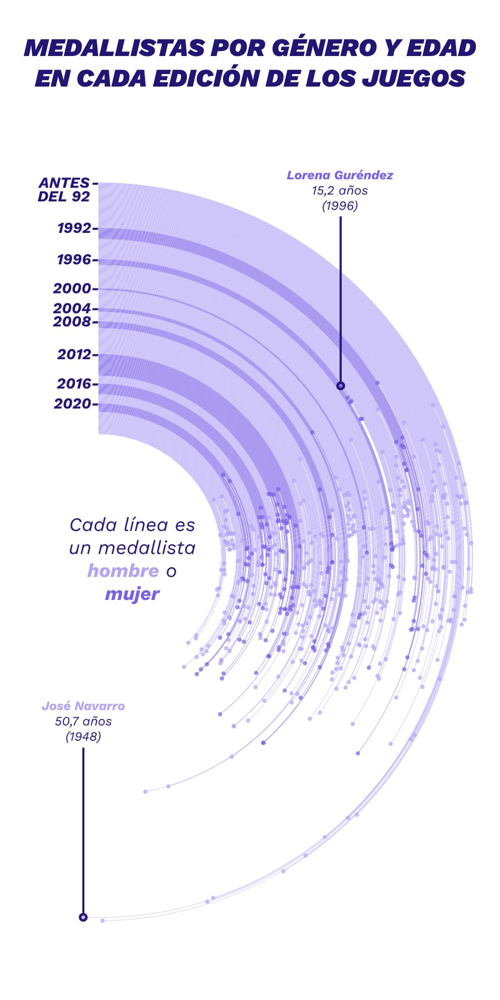

ggplot2 y edición

El 'boom' de Barcelona 92, la desigualdad de género y el dominio del norte: cinco gráficos que resumen la historia de España en los JJOO
Por qué al fenómeno RuidoBernabéu no le han salido imitadores: la clave está en un radio de 500 metros